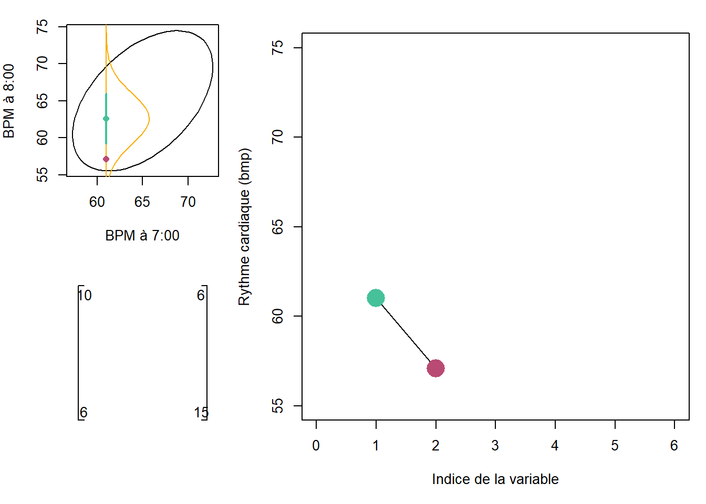
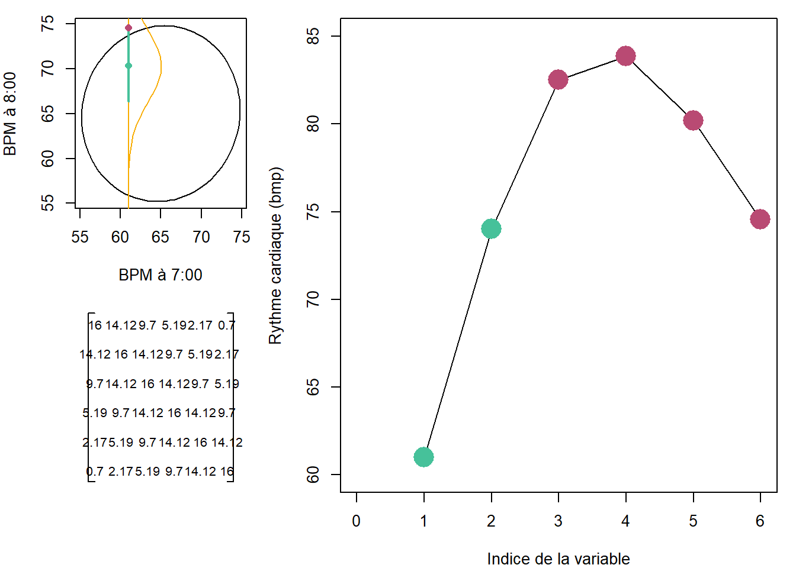
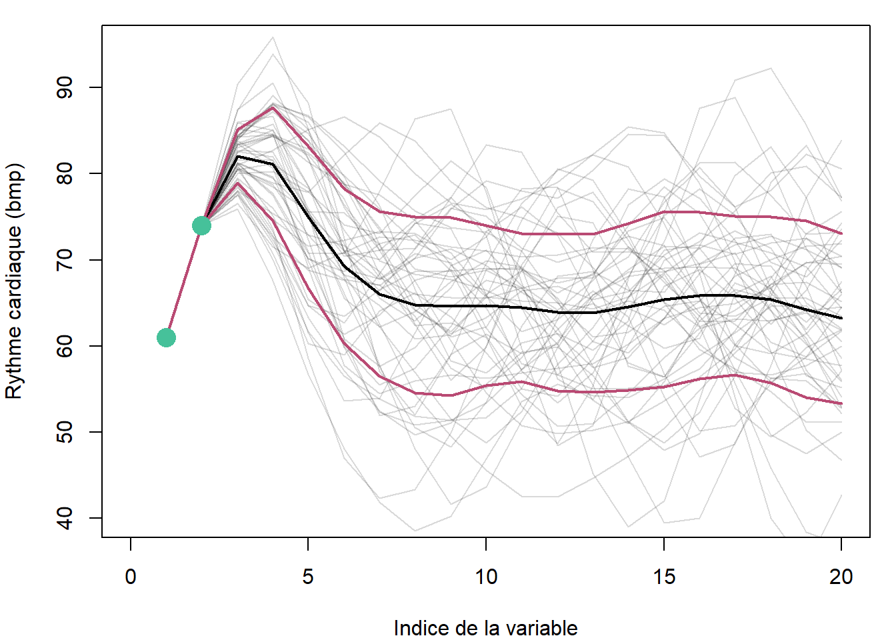
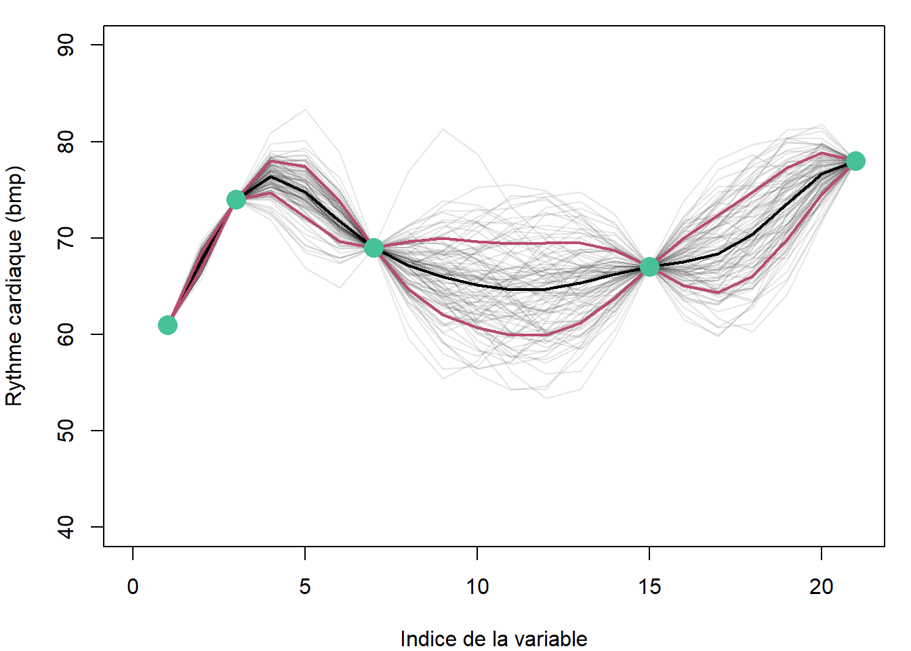

48 Les processus gaussiens
Les sorties des techniques que sont les KNN, les arbres ou les forêts ainsi que les réseaux neuronaux sont (classiquement) des nombres réels ou des catégories. Dans les cas où la crédibilité de la réponse est importante, il devient pertinent que la sortie soit probabiliste: les prédictions seront alors présentées sous forme de distributions de probabilité. Dans le cas d’une classification, la sortie du modèle sera un vecteur de probabilité qu’une observation appartienne à une classe ou à une autre. Dans celui d’une régression, on obtiendra une distribution continue.
Les processus gaussiens tirent profit des statistiques bayésiennes pour effectuer des prédictions probabilistes. D’autres techniques peuvent être utilisées pour effectuer des prédictions probabilistes, comme les réseaux neuronaux probabilistes, que j’ai intruduits précédemment.
Bien que les processus gaussiens peuvent être utilisés pour la classification, son fonctionnement s’explique favorablement, de manière intuitive, pas la régression.
48.1 Un approche intuitive
Ayant acquis de l’expérience en enseignement des processus gaussiens, John Cunningham a développé une approche intuitive permettant de saisir les mécanismes des processus gaussiens. lors de conférences disponible sur YouTube (1, 2), il aborde le sujet par la nécessité d’effectuer une régression non-linéaire.
Générons d’abord une variable prédictive x, l’heure, et une variable réponse y, le rythme cardiaque d’un individu en battements par minute (bpm).
x <- c(7, 8, 10, 14, 17)
y <- c(61, 74, 69, 67, 78)
plot(x, y, xlab="Heure", ylab="Rythme cardiaque (bpm)")
abline(v=12, lty=3, col='gray50');text(12, 67, '?', cex=2)
abline(v=16, lty=3, col='gray50');text(16, 72, '?', cex=2)
Poser un problème par un processus gaussien, c’est se demander les valeurs crédibles qui pourraient être obtenues hors du domaine d’observations (par exemple, dans la figure ci-dessus, à x=12 et x=16)? Ou bien, de manière plus générale, quelles fonctions ont pu générer les variables réponse à partir d’une structure dans les variables prédictrices?
Les distributions normales, que nous appellerons gaussiennes dans cette section par concordance avec le terme processus gaussien, sont particulièrement utiles pour répondre à cette question.
Nous avons vu précédemment ce que sont les distributions de probabilité: des outils mathématiques permettant d’appréhender la structure des processus aléatoires. Une distribution gaussienne représente une situation où l’on tire au hasard des valeurs continues. Une distribution gaussienne de la variable aléatoire \(X\) de moyenne \(0\) et de variance de \(1\) est notée ainsi:
\[ X \sim \mathcal{N} \left( 0, 1\right)\]
Par exemple, une courbe de distribution gaussienne du rythme cardiaque à 7:00 pourrait prendre la forme suivante.
\[ bpm \sim \mathcal{N} \left( 65, 5\right)\]
En R:
x_sequence <- seq(50, 80, length=100)
plot(x_sequence,
dnorm(x_sequence, mean=65, sd=5),
type="l",
xlab="Rythme cardiaque (bpm)",
ylab="Densité")
Une distribution binormale, un cas particulier de la distribution multinormale, comprendra deux vecteurs, \(x_1\) et \(x_2\). Elle aura donc deux moyennes. Puisqu’il s’agit d’une distribution biormale, et non pas deux distributions normales, les deux variables ne sont pas indépendantes et l’on utilisera une matrice de coraviance au lieu de deux variances indépendantes.
\[ \binom{x_1}{x_2} \sim \mathcal{N} \Bigg( \binom{\mu_1}{\mu_2}, \left[ {\begin{array}{cc} \Sigma_{x_1} & \Sigma_{x_1,x_2} \\ \Sigma_{x_1,x_2}^T & \Sigma_{x_2} \\ \end{array} } \right] \Bigg) \]
La matrice \(\Sigma\), dite de variance-covariance, indique sur sa diagonale les variances des variables (\(\Sigma_{x_1}\) et \(\Sigma_{x_2}\)). Les covariances \(\Sigma_{x_1,x_2}\) et \(\Sigma_{x_1,x_2}^T\) sont symétriques et indiquent le lien entre les variables.
On pourrait supposer que le rythme cardiaque à 8:00 soit corrélé avec celui à 7:00. Mises ensembles, les distriutions gaussiennes à 7:00 et à 8:00 formeraient une distribution gaussienne binormale.
\[ \binom{bpm_7}{bpm_8} \sim \mathcal{N} \Bigg( \binom{65}{75}, \left[ {\begin{array}{cc} 10 & 6 \\ 6 & 15 \\ \end{array} } \right] \Bigg) \]
En R:
##
## Attaching package: 'ellipse'## The following object is masked from 'package:graphics':
##
## pairsmeans_vec <- c(65, 75)
covariance_mat <- matrix(c(10, 6, 6, 15), ncol=2)
par(pty='s')
plot(ellipse(x=covariance_mat, centre=means_vec, levels=0.95),
type='l',
xlab="Rythme cardiaque à 7:00 (bpm)",
ylab="Rythme cardiaque à 8:00 (bpm)")
On peut se poser la question: étant donnée que \(x_1 = 68\), quelle serait la distribution de \(x_2\)? Dans ce cas bivariée, la distribution marginale serait univariée, mais dans le cas multivarié en \(D\) dimensions, la distribution marginale où l’on spécifie \(m\) variables serait de \(D-m\). de Une propriété fondamentale d’une distribution gaussienne est que peu importe l’endroit où l’angle selon lequel on la tranche, la distribution marginale sera aussi gaussienne. Lorsque l’on retranche une ou plusieurs variables en spécifiant la valeur qu’elles prennent, on applique un conditionnement à la distribution.
## Loading required package: mvtnormcondition_x1 <- 61 # changer ce chiffre pour visualiser l'effet
cond_parameters <- condMVN(mean=means_vec, sigma=covariance_mat,
dependent=2, given=1, X.given=condition_x1)
cond_mean <- cond_parameters$condMean
cond_sd <- sqrt(cond_parameters$condVar)
x2_sequence <- seq(50, 90, length=100)
x2_dens <- dnorm(x2_sequence, mean=cond_mean, sd=cond_sd)
par(pty='s')
plot(ellipse(x=covariance_mat, centre=means_vec, levels=0.95), type='l',
xlab="Rythme cardiaque à 7:00 (bpm)",
ylab="Rythme cardiaque à 8:00 (bpm)")
abline(v=condition_x1, col='#f8ad00', lwd=2, lty=2)
lines(x=condition_x1 + x2_dens*40, y=x2_sequence, col="#f8ad00", lwd=2)
lines(x = c(condition_x1, condition_x1),
y = c(cond_mean-cond_sd, cond_mean+cond_sd),
lwd=3, col='#46c19a')
points(condition_x1, cond_mean,
col='#46c19a', pch=16, cex=2)
n_sample <- 20
points(x = rep(condition_x1, n_sample),
y = rnorm(n_sample, cond_mean, cond_sd),
pch=4, col = rgb(0, 0, 0, 0.5))
Les points sur l’axe (symbole x) conditionnés sont des échantillons tirés au hasard dans la distribution conditionnée.
Une autre manière de visualiser la distribution gausienne binormale est de placer \(x_1\) et \(x_2\) côte à côte en abcisse, avec leur valeur en ordonnée. Le bloc de code suivant peut sembler lourd au premier coup d’oeil: pas de panique, il s’agit surtout d’instructions graphiques. Vous pouvez vous amuser à changer les paramètres de la distribution binormale (section 1) ainsi que la valeur de \(x_1\) à laquelle est conditionnée la distribution de \(x_2\) (section 2).
source("lib/plot_matrix.R")
# 1. Distribution
means_vec <- c(65, 65)
covariance_mat <- matrix(c(10, 6, 6, 15), ncol=2)
# 2. Condition
condition_x1 <- 61 # changer ce chiffre pour visualiser l'effet
# 3. Densité conditionnée
cond_parameters <- condMVN(mean=means_vec, sigma=covariance_mat,
dependent=2, given=1, X.given=condition_x1)
cond_mean <- cond_parameters$condMean
cond_sd <- sqrt(cond_parameters$condVar)
x2_sequence <- seq(50, 90, length=100)
x2_dens <- dnorm(x2_sequence, mean=cond_mean, sd=cond_sd)
x2_draw <- rnorm(1, cond_mean, cond_sd)
# 4. Graphiques
options(repr.plot.width = 8, repr.plot.height = 5)
layout(matrix(c(1,2,3,3), nrow=2), widths=c(1,2))
par(mar=c(4, 4, 1, 1), pty='s')
## 4.1 Ellipse
plot(ellipse(x=covariance_mat, centre=means_vec, levels=0.95),
type='l', xlab="BPM à 7:00", ylab="BPM à 8:00")
abline(v=condition_x1, col='#f8ad00', lwd=1)
lines(x=condition_x1 + x2_dens*40, y=x2_sequence, col="#f8ad00", lwd=1)
lines(x = c(condition_x1, condition_x1),
y = c(cond_mean-cond_sd, cond_mean+cond_sd),
lwd=2, col='#46c19a')
points(condition_x1, cond_mean,
col='#46c19a', pch=16, cex=1)
points(condition_x1, x2_draw, pch=16, col="#b94a73")
## 4.2 Covariance
plot_matrix(covariance_mat)
## 4.3 Série
plot(c(1, 2), c(condition_x1, x2_draw), xlim=c(0, 6), ylim=c(55, 75), type='l',
xlab="Indice de la variable", ylab="Rythme cardiaque (bmp)")
points(1, condition_x1, pch=16, col='#46c19a', cex=3)
points(2, x2_draw, pch=16, col='#b94a73', cex=3)
Les valeurs que peuvent prendre le rythme cardiaque en \(x_2\) sont tirées aléatoirement d’une distribution conditionnée. Sautons maintenant au cas multinormal, incluant 6 variables (hexanormal!). Afin d’éviter de composer une matrice de covariance à la mitaine, je me permets de la générer avec une fonction. Cette fonction particulière est nommée fonction de base radiale ou exponentiel de la racine.
\[K_{RBF} \left( x_i, x_j \right) = \sigma^2 exp \left( -\frac{\left( x_i - x_j \right)^2}{2 l^2} \right) \]
RBF_kernel <- function(x, sigma, l) {
n <- length(x)
k <- matrix(ncol = n, nrow = n)
for (i in 1:n) {
for (j in 1:n) {
k[i, j] = sigma^2 * exp(-1/(2*l^2) * (x[i] - x[j])^2)
}
}
colnames(k) <- paste0('x', 1:n)
rownames(k) <- colnames(k)
return(k)
}Dans la fonction RBF_kernel, x désigne les dimensions, sigma désigne un écart-type commun à chacune des dimensions et l est la longueur désignant l’amplification de la covariance entre des dimensions éloignées (dans le sens que la première dimension est éloignée de la dernière). Pour 6 dimensions, avec un écart-type de 4 et une longueur de 2.
## x1 x2 x3 x4 x5 x6
## x1 16.00 14.12 9.70 5.19 2.17 0.70
## x2 14.12 16.00 14.12 9.70 5.19 2.17
## x3 9.70 14.12 16.00 14.12 9.70 5.19
## x4 5.19 9.70 14.12 16.00 14.12 9.70
## x5 2.17 5.19 9.70 14.12 16.00 14.12
## x6 0.70 2.17 5.19 9.70 14.12 16.00Changez la valeur de l permet de bien saisir son influence sur la matrice de covariance. Avec un l de 1, la covariance entre \(x_1\) et \(x_6\) est pratiquement nulle: elle est un peut plus élevée avec l=2. Pour reprendre l’exemple du rythme cardiaque, on devrait en effet s’attendre à retrouver une plus grande corrélation entre celles mesurées aux temps 4 et 5 qu’entre les temps 1 et 6.
De même que dans la situation où nous avions une distribution binormale, nous pouvons conditionner une distribution multinormale. Dans l’exemple suivant, je conditionne la distribution multinormale de 6 dimensions en spécifiant les valeurs prises par les deux premières dimensions. Le résultat du conditionnement est une distribution en 4 dimensions. Puisqu’il est difficile de présenter une distribution en 6D, le graphique en haut à gauche ne comprend que les dimensions 1 et 6. Remarquez que la corrélation entre les dimensions 1 et 6 est faible, en concordance avec la matrice de covariance générée par la fonction RBF_kernel. Lancez plusieurs fois le code et voyez ce qui advient des échantillonnages dans les dimensions 3 à 6 selon le conditionnement en 1 et 2.
##
## Attaching package: 'MASS'## The following object is masked from 'package:plotly':
##
## select## The following object is masked from 'package:dplyr':
##
## select# 1. Distribution
means_vec <- rep(65, 6)
covariance_mat <- covariance_6
# 2. Condition
conditions_x <- c(61, 74) # changer ces chiffres pour visualiser l'effet
# 3. Densité conditionnée
cond_parameters <- condMVN(mean=means_vec, sigma=covariance_mat,
dependent.ind = 3:6, given.ind=1:2,
X.given=conditions_x)
cond_mean <- cond_parameters$condMean
cond_sd <- sqrt(cond_parameters$condVar)
x6_sequence <- seq(50, 90, length=100)
x6_dens <- dnorm(x2_sequence, mean=cond_mean[4], sd=cond_sd[4, 4])
x_3.6_draw <- mvrnorm(n = 1, mu = cond_mean, Sigma = cond_sd^2)
# 4. Graphiques
layout(matrix(c(1,2,3,3), nrow=2), widths=c(1,2))
par(mar=c(4, 4, 1, 1))
## 4.1 Ellipse
plot(ellipse(x=covariance_mat[c(1, 6), c(1, 6)], centre=means_vec[c(1, 6)], levels=0.95),
type='l', xlab="BPM à 7:00", ylab="BPM à 8:00")
abline(v=conditions_x[1], col='#f8ad00', lwd=1)
lines(x=condition_x1 + x6_dens*40, y=x2_sequence, col="#f8ad00", lwd=1)
lines(x = c(conditions_x[1], conditions_x[1]),
y = c(cond_mean[4]-cond_sd[4, 4], cond_mean[4]+cond_sd[4, 4]),
lwd=2, col='#46c19a')
points(conditions_x[1], cond_mean[4],
col='#46c19a', pch=16, cex=1)
points(conditions_x[1], x_3.6_draw[4], pch=16, col="#b94a73")
## 4.2 Covariance
plot_matrix(covariance_mat, cex=0.8)
## 4.3 Série
plot(1:6, c(conditions_x, x_3.6_draw), xlim=c(0, 6), ylim=c(60, 85), type='l',
xlab="Indice de la variable", ylab="Rythme cardiaque (bmp)")
points(c(1, 2), conditions_x, pch=16, col='#46c19a', cex=3)
points(3:6, x_3.6_draw, pch=16, col='#b94a73', cex=3)
La structure de la covariance assure que les dimensions proches prennent des valeurs similaires, assurant une courbe lisse et non en dents de scie. Pourquoi s’arrêter à 6 dimensions? Prenons-en plusieurs, puis générons plus d’un échantillon. Ensuite, utilisons ces simulations pour de calculer la moyenne et l’écart-type de chacune des dimensions.
# 1. Distribution
n <- 20
means_vec <- rep(65, n)
covariance_mat <- RBF_kernel(x = 1:n, sigma = 10, l = 2)
# 2. Condition
conditions_x <- c(61, 74) # changer ces chiffres pour visualiser l'effet
# 3. Densité conditionnée
cond_parameters <- condMVN(mean=means_vec, sigma=covariance_mat,
dependent.ind = 3:n, given.ind=1:2,
X.given=conditions_x)
cond_mean <- cond_parameters$condMean
cond_sd <- cond_parameters$condVar
# 4. Graphiques
par(mar=c(4, 4, 1, 1))
## 4.3 Série
plot(0, 0, xlim=c(0, n), ylim=c(40, 95), type='l',
xlab="Indice de la variable", ylab="Rythme cardiaque (bmp)")
samples <- 50
x_3.n_draw <- mvrnorm(n = samples, mu = cond_mean, Sigma = cond_sd)
for (i in 1:samples) {
lines(1:n, c(conditions_x, x_3.n_draw[i, ]), col = rgb(0, 0, 0, 0.15))
}
x_3.n_draw_mean <- apply(x_3.n_draw, 2, mean)
x_3.n_draw_sd <- apply(x_3.n_draw, 2, sd)
lines(1:n, c(conditions_x, x_3.n_draw_mean), lwd = 2)
lines(1:n, c(conditions_x, x_3.n_draw_mean + x_3.n_draw_sd), col = "#b94a73", lwd = 2)
lines(1:n, c(conditions_x, x_3.n_draw_mean - x_3.n_draw_sd), col = "#b94a73", lwd = 2)
points(c(1, 2), conditions_x, pch=16, col='#46c19a', cex=2)
Revenons au rythme cardiaque. On pourra utiliser le conditionnement aux temps observés, soit 7:00, 8:00, 10:00, 14:00 et 17:00 pour estimer la distribution à 12:00 et 16:00, où à des dimensions artificielles quelconques ici fixées aux demi-heures.
# 1. Distribution
n <- 21
means_vec <- rep(65, n)
covariance_mat <- RBF_kernel(x = 1:n, sigma = 5, l = 2)
# 2. Condition
conditions_x <- c(61, 74, 69, 67, 78)
conditions_indices <- c(1, 3, 7, 15, 21)
dependent_indices <- (1:20)[! 1:20 %in% conditions_indices]
# 3. Densité conditionnée
cond_parameters <- condMVN(mean=means_vec, sigma=covariance_mat,
dependent.ind = dependent_indices,
given.ind=conditions_indices,
X.given=conditions_x)
cond_mean <- cond_parameters$condMean
cond_sd <- cond_parameters$condVar
samples <- 100
x_draw <- mvrnorm(n = samples, mu = cond_mean, Sigma = cond_sd)
means_draw <- apply(x_draw, 2, mean)
sd_draw <- apply(x_draw, 2, sd)
# 4. Graphiques
par(mar=c(4, 4, 1, 1))
## 4.1 Combiner les prédictions
bpm <- rep(NA, n)
bpm[conditions_indices] <- conditions_x
bpm[dependent_indices] <- means_draw
bpm_sd <- rep(NA, n)
bpm_sd[conditions_indices] <- 0
bpm_sd[dependent_indices] <- sd_draw
## 4.2 Combiner les tirages et les données
x_draw_all <- matrix(ncol = n, nrow = samples)
for (i in 1:length(conditions_x)) x_draw_all[, conditions_indices[i]] <- conditions_x[i]
x_draw_all[, dependent_indices] <- x_draw
## 4.3 Série
plot(1:n, bpm, xlim=c(0, n), ylim=c(40, 90), type='l', lwd = 2,
xlab="Indice de la variable", ylab="Rythme cardiaque (bmp)")
for (i in 1:samples) {
lines(1:n, x_draw_all[i, ], col = rgb(0, 0, 0, 0.1))
}
lines(1:n, bpm+bpm_sd, col = "#b94a73", lwd = 2)
lines(1:n, bpm-bpm_sd, col = "#b94a73", lwd = 2)
points(conditions_indices, bpm[conditions_indices], pch=16, col='#46c19a', cex=2)
Comme on devrait s’y attendre, la régression résultant de la mise en indices de la distribution est précise aux mesures, et imprécise aux indices peu garnies en mesures. Nous avions utilisé 21 dimensions. Lorsque l’on généralise la procédure à une quantité infinie de dimensions, on obtient un processus gaussien.

L’indice de la variable devient ainsi une valeur réelle. Un processus gaussien, \(\mathcal{GP}\), est défini par une fonction de la moyenne, \(m \left( x \right)\), et une autre de la covariance que l’on nomme noyau (ou kernel), \(K \left( x, x' \right)\). Un processus gaussien est noté de la manière suivante:
\[\mathcal{GP} \sim \left( m \left( x \right), K \left( x, x' \right) \right)\]
La fonction définissant la moyenne peut être facilement écartée en s’assurant de normaliser la variable réponse. Par convention, on spécifie une fonction de moyenne comme retournant toujours un zéro. Quant au noyau, il peut prendre différentes formes. De plus ces formes peuvent être combinées. Règle générale, on utilisera un noyau permettant de définir deux paramètres: la hauteur (\(\sigma\)) et la longueur de l’ondulation (\(l\)).
# Faites varier ces paramètres
SIGMA <- 3
L <- 5
# Graphique
n <- 100
sample <- mvrnorm(n = 1, mu = rep(0, n),
Sigma = RBF_kernel(x=1:n, sigma = SIGMA, l = L))
plot(1:n, sample, type='l', ylim=c(-10, 10))
On pourra ajouter à ce noyau un bruit blanc, c’est-à-dire une variation purement aléatoire, sans covariance (noyau générant une matrice diagonale).
Le noyau devient ainsi un a priori, et le processus gaussien conditionné aux données devient un a posteriori probabiliste.
Finalement, les processus gaussiens peuvent être extrapolés à plusieurs variables descriptives.
48.1.1 Les processus gaussiens en R
Pas de souci, vous n’aurez pas à programmer vos propres fonctions pour lancer des processus gaussiens. Vous pourrez passer par caret. Vous pourriez, comme c’est le cas avec les réseaux neuronnaux, obtenir davantage de contrôle sur l’autoapprentissage en utilisant directement la fonction gausspr du package kernlab.
##
## Attaching package: 'kernlab'## The following object is masked from 'package:permute':
##
## how## The following object is masked from 'package:purrr':
##
## cross## The following object is masked from 'package:ggplot2':
##
## alphax <- c(7, 8, 10, 14, 17)
y <- c(61, 74, 69, 67, 78)
y_sc <- (y - mean(y)) / sd(y)
m <- gausspr(x, y_sc, kernel = 'rbfdot',
kpar = list(sigma = 4),
variance.model = TRUE, scaled = TRUE,
var = 0.01,
cross = 2)
xtest <- seq(6, 18, by = 0.1)
y_sc_pred_mean <- predict(m, xtest, type="response")
y_pred_mean <- y_sc_pred_mean * sd(y) + mean(y)
y_sc_pred_sd <- predict(m, xtest, type="sdeviation")
y_pred_sd <- y_sc_pred_sd * sd(y)
plot(x, y, xlim = c(6, 18), ylim = c(45, 90))
lines(xtest, y_pred_mean)
lines(xtest, y_pred_mean + y_pred_sd, col="red")
lines(xtest, y_pred_mean - y_pred_sd, col="red")
abline(v=12, lty=3, col='gray50');text(12, 67, '?', cex=2)
abline(v=16, lty=3, col='gray50');text(16, 72, '?', cex=2)
48.1.2 Application pratique
Les processus gaussiens sont utiles pour effectuer des prédictions sur des phénomène sur lesquels on désire éviter de se commettre sur la structure. Les séries temporelles ou les signaux spectraux en sont des exemples. Aussi, j’ai utilisé les processus gaussiens pour modéliser des courbes de réponse aux fertilisants.
EXEMPLE…
Prédiction spatiale: - https://www.sciencedirect.com/science/article/pii/S2211675316300033 - https://stackoverflow.com/questions/43618633/multi-output-spatial-statistics-with-gaussian-processes